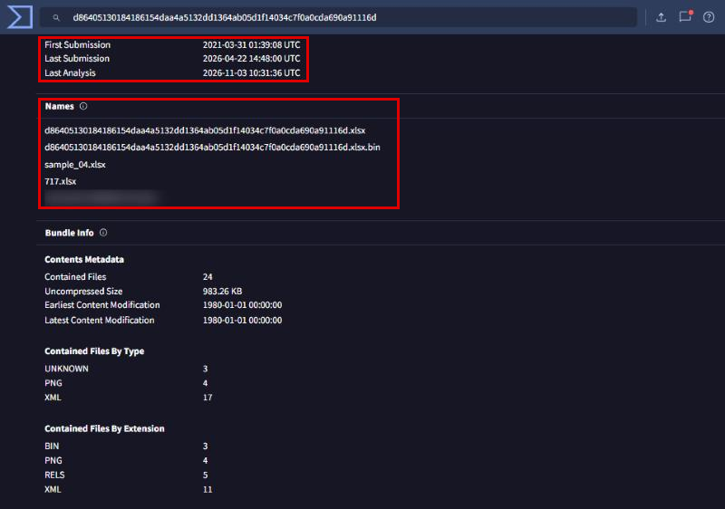
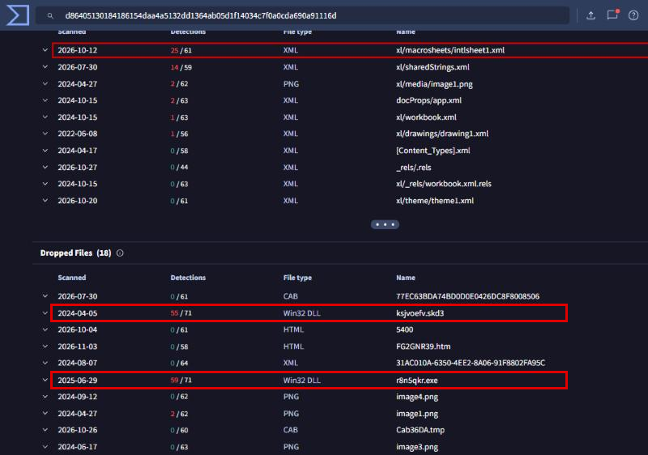
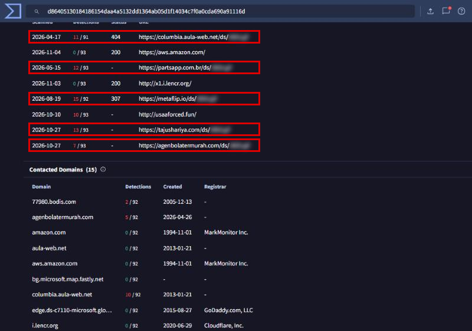
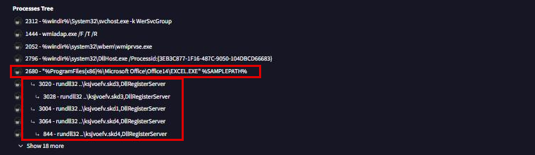
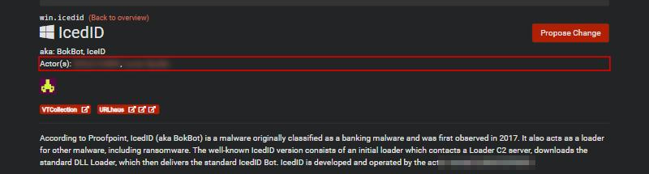

IcedID
- Lab: IcedID trên CyberDefenders. Nhóm Threat Intel, độ khó Easy, đã retired.
- Dữ liệu: file
hash.txtchứa SHA-1191eda0c539d284b29efe556abb05cd75a9077a0. Lab không cho log hay PCAP, chỉ yêu cầu tra cứu mẫu trên các nền tảng threat intel công khai. - Công cụ: VirusTotal (tab Details, Relations, Behavior), Malpedia, RDAP/WHOIS.
- Quy ước:
- Ảnh là ảnh chụp trang VirusTotal và Malpedia của đúng mẫu này, chụp ngày 04/11/2026. Số engine phát hiện và ngày quét thay đổi theo thời gian.
- Khung đỏ đánh dấu chỗ cần chú ý. Vùng làm mờ là đáp án của câu hỏi (tên file, tên payload, tên nhóm).
Tóm tắt kết quả
- SHA-1 của lab ứng với một file Excel dạng Office Open XML (SHA-256
d8640513...a91116d, 105,53 KB). File được gửi lên VirusTotal lần đầu lúc 01:39:08 UTC ngày 31/03/2021. - File chứa một macro sheet Excel 4.0 (
xl/macrosheets/intlsheet1.xml). Đây là phần bị nhiều engine phát hiện nhất trong các file bên trong. - Khi chạy trong sandbox, file gọi tới 5 URL cùng dạng
https://<tên miền>/ds/<tên file>.giftrên 5 tên miền khác nhau. EXCEL.EXEsinh ra nhiều tiến trìnhrundll32 ..\<tên ngẫu nhiên>.skd<N>,DllRegisterServer. File tải về mang đuôi.gifnhưng được chạy như một DLL.- Malpedia gắn IcedID với 2 nhóm tội phạm có động cơ tài chính.
Bước 1: xác định file phát tán ban đầu
- Mục tiêu: biết nạn nhân nhận được file gì.
- Cách làm: tra SHA-1 trên VirusTotal, mở tab Details, xem mục History và Names (các tên file từng được gửi lên cho cùng mẫu).

- Nhận định:
- Kiểu tên
document-<dãy số>là kiểu tên thường thấy ở file đính kèm trong email lừa đảo. - Các tên khác là tên do người phân tích hoặc sandbox đặt khi gửi mẫu lên, không phải tên nạn nhân nhận được.
- Hướng giải: tên file là dòng đã làm mờ trong mục Names.
Bước 2: macro Excel 4.0 bên trong file
- Mục tiêu: biết file dùng loại macro nào.
- Cách làm: mở tab Relations, xem mục Bundled Files (các file bên trong gói Office Open XML).

- Nhận định:
- Thư mục
xl/macrosheets/chứa macro sheet Excel 4.0 (XLM), không phải macro VBA (VBA nằm trongvbaProject.bin). - Macro XLM thường được dùng để né các công cụ chỉ quét macro VBA.
Bước 3: hạ tầng tên miền phân phối payload
- Mục tiêu: tìm các URL macro dùng để tải payload.
- Cách làm: trong tab Relations, xem mục Contacted URLs và Contacted Domains.

- Nhận định:
- Macro có 5 tên miền dự phòng chứa cùng một file. Nếu một tên miền bị chặn hoặc gỡ, macro vẫn tải được payload từ tên miền khác.
- Đuôi tên miền khác nhau (
.net,.com.br,.io,.com). - Cột Registrar trên VirusTotal để trống cho các tên miền này. Tra RDAP ngày 04/11/2026 cho thấy có tên miền đã được đăng ký lại vào năm 2026 (ví dụ
agenbolatermurah.comđăng ký ngày 04/05/2026). Vì vậy WHOIS hiện tại không phản ánh nhà đăng ký năm 2021. - Hướng giải: số tên miền là số host khác nhau trong 5 URL. Câu hỏi về nhà đăng ký cần dữ liệu WHOIS lịch sử (historical WHOIS) tại thời điểm chiến dịch.
Bước 4: payload bước hai chạy dưới dạng DLL
- Mục tiêu: xác nhận file
.giftải về là gì và được chạy ra sao. - Cách làm: mở tab Behavior, xem mục Processes Tree.

- Nhận định:
- Excel trực tiếp sinh ra
rundll32. Đây là hành vi bất thường của ứng dụng Office, và cũng là nội dung của Sigma rule "Suspicious Microsoft Office Child Process" mà VirusTotal ghi nhận khớp. - File được gọi qua
rundll32 <file>,DllRegisterServer, tức là được nạp như một DLL dù mang đuôi lạ. Mục Dropped Files (Bước 2) cũng ghi nhận file tênksjvoefv.skd3là Win32 DLL. - Đổi đuôi thành
.gifkhi tải và.skd<N>khi lưu giúp payload lọt qua bộ lọc chỉ dựa vào đuôi file. - Hướng giải: tên file payload là phần cuối của 5 URL ở Bước 3. Tên hàm Windows API dùng để tải file không có trong dữ liệu công khai của VirusTotal. Cần đọc nội dung macro sheet đã giải mã, hoặc báo cáo sandbox có ghi lại API call.
Bước 5: họ mã độc và nhóm tấn công
- Mục tiêu: gắn mẫu với họ mã độc và nhóm đứng sau.
- Cách làm: đối chiếu nhãn phát hiện trên VirusTotal với trang
win.icedidtrên Malpedia.

- Nhận định:
- IcedID ban đầu là trojan ngân hàng (mã độc chuyên đánh cắp phiên đăng nhập ngân hàng), về sau được dùng làm loader cho ransomware.
- Hướng giải: tên nhóm nằm ở dòng Actor(s) trên Malpedia. Đối chiếu với báo cáo của hãng bảo mật về chiến dịch Excel 4.0 năm 2021 để chọn đúng nhóm.
Dòng thời gian
- 16/09/2006 00:00:00 UTC: giá trị Creation Time trong metadata của file Excel. Đây là giá trị mặc định của template, không phải ngày tạo mẫu thật.
- 31/03/2021 01:39:08 UTC (08:39:08 UTC+7): mẫu được gửi lên VirusTotal lần đầu.
- Khi chạy trong sandbox, thứ tự hành vi như sau:
- Excel mở file và chạy macro Excel 4.0;
- macro tải
<tên file>.giftừ một trong 5 tên miền; - file được lưu với đuôi
.skd<N>rồi chạy bằngrundll32 ...,DllRegisterServer.